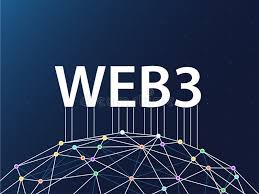

Web 3.0 is the next emerging generation of the World Wide Web, focused on decentralization, blockchain technology, and giving users greater ownership and control over their own data and digital identity.
Instead of data being stored on centralized servers owned and controlled by large corporations like Google or Meta, Web 3.0 distributes data across blockchain networks. This means no single company owns or controls the information. Users interact with decentralized applications (dApps) using digital wallets instead of traditional usernames and passwords. Technologies driving Web 3.0 include blockchain, smart contracts, cryptocurrencies, and the Semantic Web which allows machines to understand and interpret content intelligently.
Web 3.0 aims to solve major problems with Web 2.0 — particularly the fact that a handful of large corporations control most of the web's data and profit from it. By decentralizing the web, Web 3.0 seeks to give individuals true ownership of their digital assets, privacy over their personal data, and freedom from censorship. While still evolving, it represents a fundamental shift in the philosophy of how the Internet should work.